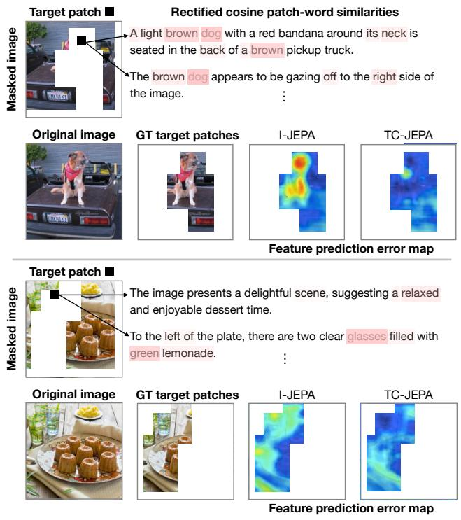
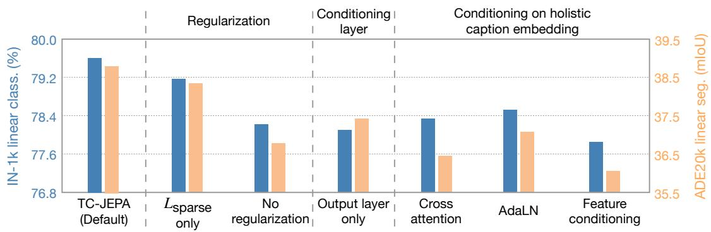
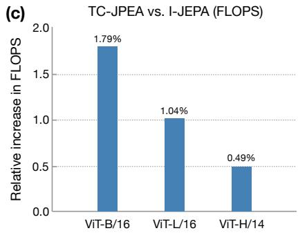

TC-JEPA：把 masked feature prediction 的不确定性，交给 caption 来收束
这篇的重点不是“又做了一个图文预训练模型”，而是把 JEPA 的预测目标从纯视觉上下文变成 text-conditional feature prediction：测试时仍只用视觉 encoder，训练时用 caption 帮 predictor 学到更语义化的 patch 表征。
先读这篇要从“为什么 I-JEPA 会不确定”开始，而不是从分数开始。I-JEPA 只拿可见 context patch 去预测 target patch feature，遮挡区域可能对应很多合理语义；TC-JEPA 的假设是 caption 能提供场景组成、属性和空间关系，把 target feature 的可行解空间变窄。
读前定位
先抓训练信号。TC-JEPA 的核心不是给 I-JEPA 加一个语言标签头，而是把“预测被遮挡 patch feature”改成“在文字条件下预测被遮挡 patch feature”。测试时文字分支和 predictor 都会丢弃，留下的仍是纯视觉 encoder。
再抓边界。它不是 CLIP 替代品，也不是像素重建路线；它更像一条条件化 JEPA 路线：借 caption 降低目标 feature 的歧义，同时保留 JEPA 对 dense representation 的偏好。




方法拆解：它到底在哪里用文字
- 视觉骨架仍是 JEPA。context encoder 处理可见 patch，target encoder 给出目标 patch feature，predictor 负责从 context 与 mask token 预测 target feature。
- caption 不进最终 encoder。每张图先用 ShareGPT4V 生成多句 caption，训练时随机采样默认 8 句；这些句子只服务于 predictor 的条件化。
- T5 word embedding 替代 CLIP text encoder。作者强调这里要保留自然语言组合与顺序信息，目标是 patch-word 细粒度对应，而不是全局图文 embedding 对齐。
- 多层 sparse cross-attention。在 predictor 的多个层里，patch query 对 caption word sequence 做 cross-attention；每个 caption 分开条件化，再用 max-pooling 选出最有用的条件信号。
- 两个正则约束。sparsity 让 patch-word 对应更集中，cross-layer consistency 让不同层的对应关系更稳定；Figure 4 的消融说明这两项不是装饰。
图表导读：先看哪几张
- Figure 2 定义模型接口：caption 只进 predictor，多层 cross-attention 负责把词级语义写入 masked feature prediction。
- Figure 5 是最关键证据：它把 patch-word grounding 和 prediction error 放在一起，避免只展示漂亮 attention。
- Figure 4 用来判断收益来源：文字条件、稀疏约束、一致性约束、多层注入都要分开看。
- Figure 8 负责回答成本问题：收益是否值得额外 caption 与 text conditioner 训练成本。
关键结果：更像“细粒度视觉表征”而不是 CLIP 替代品
为什么这对通用视觉自监督重要
它给 JEPA 开了一条很实用的路：训练阶段可以借弱文本监督降低 feature prediction 的歧义，但最终部署仍保留纯视觉 encoder。这比“把所有东西都塞进图文对比学习”更接近自监督表征学习的核心问题，也更适合关注 dense prediction、patch-level semantics 和 video/image foundation model 的读者。
Figure 5 最值得细看：它不是只展示 attention 好看，而是把 patch-word similarity 和 prediction error 放在一起。若这个现象在更大数据和视频上成立，后续很可能出现 text-conditioned JEPA、motion-conditioned JEPA、depth/pose-conditioned JEPA 等一系列“条件化预测表征”路线。
我会保留的疑问
第一，caption 是 ShareGPT4V 合成的，强 captioner 本身带来的先验有多大还需要更干净的 ablation。第二，多 caption 的默认 N=8 已经接近饱和，但这会让预处理和数据资产成本上升。第三，它在 classification 上仍未完全替代强 augmentation/invariance SSL；真正的优势更集中在 segmentation、fine-grained grounding 和 VLM downstream。
精读顺序
建议先读 Figure 2 和方法 3.2/3.3，理解 word-level conditioner；再读 Table 1/3 与 Figure 4/5，判断收益来自哪里；最后扫 Appendix 的 compute、caption robustness 和 N sensitivity，确认它是不是能放进自己的预训练 pipeline。